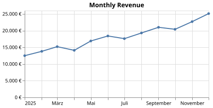

Number and Time Locales#
Locales control how Vega formats certian values. format_locale sets number formatting options such as decimal marks, digit grouping, and currency symbols. time_format_locale sets the names and patterns used for dates and times.
Use a built-in locale name such as de-DE or ja-JP for standard regional formats, or pass a locale object for custom rules. The built-in names match the locale files in d3-format and d3-time-format. Locales change formatting only. They do not change the timezone or the data.
Use a Built-In Locale#
This chart uses de-DE (German language) as both the number and time locale. This alters the display of the $,.0f numeric format pattern on the y-axis and the display of month names on the x-axis.
Save this specification:
chart.vl.json
{
"$schema": "https://vega.github.io/schema/vega-lite/v6.json",
"title": "Monthly Revenue",
"width": 380,
"height": 180,
"data": {
"values": [
{"month": "2025-01-01", "revenue": 12500},
{"month": "2025-02-01", "revenue": 13800},
{"month": "2025-03-01", "revenue": 15200},
{"month": "2025-04-01", "revenue": 14100},
{"month": "2025-05-01", "revenue": 16900},
{"month": "2025-06-01", "revenue": 18400},
{"month": "2025-07-01", "revenue": 17600},
{"month": "2025-08-01", "revenue": 19300},
{"month": "2025-09-01", "revenue": 21000},
{"month": "2025-10-01", "revenue": 20400},
{"month": "2025-11-01", "revenue": 22700},
{"month": "2025-12-01", "revenue": 25100}
]
},
"mark": {"type": "line", "point": true},
"encoding": {
"x": {"field": "month", "type": "temporal", "scale": {"type": "utc"}, "title": null},
"y": {"field": "revenue", "type": "quantitative", "axis": {"format": "$,.0f"}, "title": null}
}
}
use vl_convert_rs::converter::{FormatLocale, TimeFormatLocale};
use vl_convert_rs::{VlConverter, VlOpts};
let spec = std::fs::read_to_string("chart.vl.json")?;
let converter = VlConverter::new();
let options = VlOpts {
format_locale: Some(FormatLocale::Name("de-DE".to_string())),
time_format_locale: Some(TimeFormatLocale::Name("de-DE".to_string())),
..Default::default()
};
let output = converter
.vegalite_to_svg(spec, options, Default::default())
.await?;
std::fs::write("chart.svg", output.svg)?;
Rendered with de-DE locale for both settings, the y-axis groups thousands with a dot and places the euro sign after the number, and the x-axis uses German month names:

Define Custom Number Rules#
A number locale follows the d3-format locale definition. Save this example as format-locale.json:
format-locale.json
{
"decimal": ",",
"thousands": ".",
"grouping": [3],
"currency": ["", " EUR"]
}
use vl_convert_rs::converter::FormatLocale;
use vl_convert_rs::{serde_json, VlOpts};
let options = VlOpts {
format_locale: Some(FormatLocale::Object(serde_json::json!({
"decimal": ",",
"thousands": ".",
"grouping": [3],
"currency": ["", " EUR"]
}))),
..Default::default()
};
Custom time locales follow the d3-time-format locale definition and define day and month names as well as date and time patterns. Prefer a built-in name when one fits.
See Configuration to apply a locale to every conversion by default.